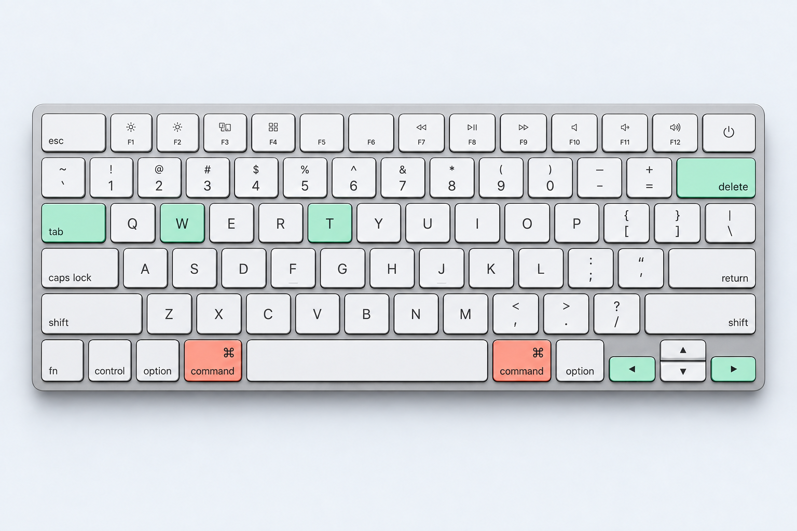
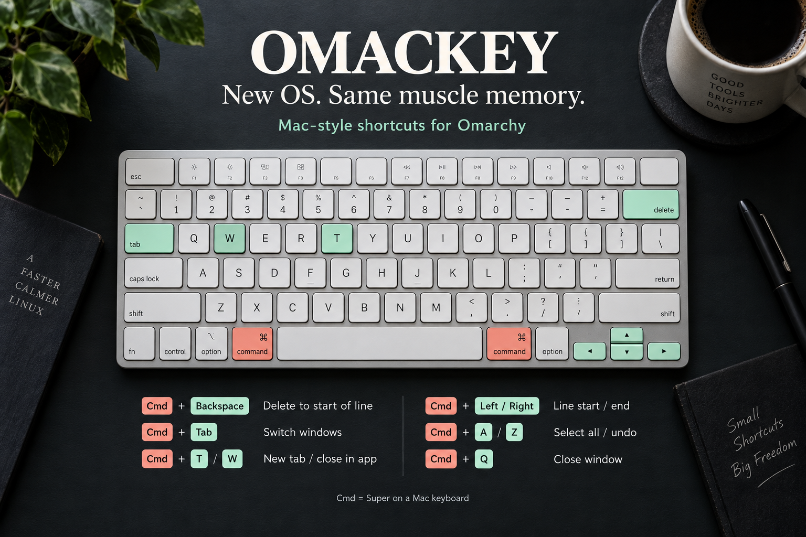

Cmd + Backspace
Delete to line start.
Delete from the cursor to the start of the line.
⌘+Backspace
Mac shortcuts for Omarchy
You moved to Linux. Your hands stayed on a Mac. Bring your favorite shortcuts with you.
Made for Omarchy · Open source · MIT licensed

⌘ T a fresh tab / ⌘ S a quick save / ⌘ Tab your next window
Main shortcuts
For the Mac on your desk and the Omarchy machine beside it. Or the Mac you just left behind.
Cmd + Backspace
Delete from the cursor to the start of the line.
Jump to the beginning or end of a line.
Move focus left or right, including across monitors.
Open a tab. Close in app. Shift+Cmd+T brings a closed tab back.
Select all, undo, find, and save in the focused app.
Shortcuts follow the focused app’s behavior. Cmd+Q closes the focused window. See all shortcuts and behavior notes ↗
Cmd is Super in Omarchy; Option is Alt. Application actions depend on how the focused app handles the keys sent to it.
| Shortcut | Action |
|---|---|
| Cmd + A | Select allSends Ctrl + A. |
| Cmd + Z | UndoSends Ctrl + Z. |
| Cmd + Shift + Z | RedoSends Ctrl + Shift + Z. |
| Cmd + Backspace | Delete to start of lineSends Ctrl+U in windows tagged terminal; Shift+Home, then Backspace elsewhere. |
| Option + ← | Word leftOption on a Mac keyboard. Sends Alt+B in tagged terminals; Ctrl+Left elsewhere. |
| Option + → | Word rightOption on a Mac keyboard. Sends Alt+F in tagged terminals; Ctrl+Right elsewhere. |
| Cmd + ← | Start of lineSends Home. |
| Cmd + → | End of lineSends End. |
| Shortcut | Action |
|---|---|
| Cmd + W | Close in appSends Ctrl + W. |
| Cmd + T | New tabSends Ctrl + T. |
| Cmd + Shift + T | Reopen closed tabSends Ctrl + Shift + T. |
| Cmd + F | FindSends Ctrl + F. |
| Cmd + S | SaveSends Ctrl + S. |
| Cmd + O | OpenSends Ctrl + O. |
| Cmd + P | PrintSends Ctrl + P. |
| Cmd + N | New windowSends Ctrl + N. |
| Cmd + Shift + N | New private windowSends Ctrl + Shift + N. |
| Cmd + R | ReloadSends Ctrl + R. |
| Cmd + L | Focus locationSends Ctrl + L. |
| Cmd + [ | BackSends Alt + Left. |
| Cmd + ] | ForwardSends Alt + Right. |
| Cmd + G | Next matchSends Ctrl + G. |
| Cmd + Shift + G | Previous matchSends Ctrl + Shift + G. |
| Shortcut | Action |
|---|---|
| Cmd + Q | Close windowCloses the focused window, not every window of an application. |
| Ctrl + ← | Focus on left window |
| Ctrl + → | Focus on right window |
| Cmd + ↑ | Focus on above window |
| Cmd + ↓ | Focus on below window |
| Cmd + Enter | Launch terminal |
| Cmd + Shift + Enter | Launch browser |
| Cmd + Left drag | Move windowHold Cmd and drag with the left mouse button. Disabled while the switcher is open. |
| Cmd + Right drag | Resize windowHold Cmd and drag with the right mouse button. Disabled while the switcher is open. |
| Cmd + Ctrl + Esc | System menuThe Omarchy System menu moves here from Cmd+Escape. |
| Shortcut | Action |
|---|---|
| Cmd + Tab | Next window |
| Cmd + Shift + Tab | Previous window |
| Cmd + ` | Next window in application |
| Cmd + Shift + ` | Previous window in application |
| Cmd + ← | Select the tile to the leftWhile the switcher is open. |
| Cmd + → | Select the tile to the rightWhile the switcher is open. |
| Cmd + ↑ | Select the tile aboveWhile the switcher is open. |
| Cmd + ↓ | Select the tile belowWhile the switcher is open. |
| Cmd + Enter | Activate the selected windowWhile the switcher is open. |
| Cmd + Shift + Enter | Activate the selected windowWhile the switcher is open. |
| Cmd + Esc | Cancel the switcherReturn without changing the focused window. |
| Release either Cmd | Activate the selected windowRelease the left or right Command key while the switcher is open. |
Window switcher
Hold Cmd and press Tab to cycle through individual windows. Release to focus your choice. Every window gets its own tile—even when they belong to the same app.
Add Shift to go backwards. Use Cmd + ` to cycle within the current application.
Switcher detailsKeyboard reference
The main remaps at a glance.

Setup
Run these commands in your Omarchy session. The installer adds the bindings and asks whether you want the window switcher.
Source on GitHubgit clone https://github.com/asaharan/omackey.git
cd omackey
./install.shThe bindings use Super, which is normally the Command key on a Mac keyboard and the Windows key on a PC keyboard. The artwork uses a Mac keyboard because that’s where these habits come from.
Omackey maps familiar shortcuts to Linux key sequences. Apps decide how to handle them. Delete-to-start sends Ctrl+U to windows tagged as terminals, and Shift+Home followed by Backspace elsewhere. Cmd+Q closes the focused window, rather than quitting all windows of an application.
Yes. Choose no when the installer asks about the switcher UI. The Mac-style application bindings remain installed. You can enable the UI later with ./enable-switcher.sh.
Run ./uninstall.sh from the checkout to remove Omackey’s integration. The repository’s README has the installation and management commands.